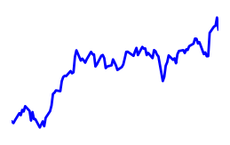

168.89
178.21
4.61
155.27
163.60
8.80

960.52
1,048.39
29.35

89.70
91.76
2.07

Список компаний >>
| Компания | Последняя новость | Акция, $ (мин/макс) | Измение стоим. | Доход, Прибыль, млн.$ | Рентабельность, EPS | |
|---|---|---|---|---|---|---|
| Взгляд инвестора: взгляд на номера для Facebook, Inc. (NasdaqGS: FB) | 177.88 168.89 178.21 | +7.25 (+0.0408%) | 33,173.00 13,610.00 | 41.03 4.61 |  | |
| Apple | Apple Inc. планирует выпустить 20 миллионов единиц iPhone X в этом году. Производственные трудности означают, что Apple будет поставлять только около половины в | 163.05 155.27 163.60 | +5.64 (+0.0346%) | 223,507.00 46,651.00 | 20.87 8.80 | |
| Аккумулятор Intel Corporation сохраняет благоприятный способ воспроизведения революции AI. Фонду INTC еще предстоит пройти долгий путь, прежде чем он будет оцен | 1,019.27 960.52 1,048.39 | +46.71 (+0.0458%) | 104,596.00 21,015.00 | 20.09 29.35 | | |
| EPAM | 30 500 акций в EPAM Systems, Inc. (EPAM), приобретенных Банком Новой Шотландии | 90.95 89.70 91.76 | +0.61 (+0.0067%) | 1,285.44 111.93 | 8.71 2.07 | |
Относительный рост акций, %%

Рентабельность вложений в акции (Стратегия 1): сколько $$ заработали с каждого вложенного $

Пики колебаний акций, %%